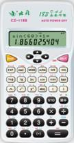
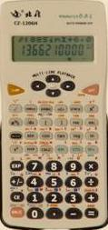

WebCal 計數機網頁
北雁CZ-118B及CZ-1206H 簡介
|  |  |
| CZ-118B | CZ-1206H |
編寫日期: 2007年12月27日
北雁CZ-118B及CZ-1206H是中國大陸品牌的科學函數計算機 (北京易亨北雁科技發展有限公司)，CZ-118B為內地中學生使用的計算機型號，亦是香港考評局接納的准用計算機型號之一，可以在香港中學會考及高級程度會考中使用，但要注意北雁CZ-118B由於沒有在香港發售，所以即使擁有這部計算機，亦很可能沒有香港考評局准用計算機標籤，若果要在香港中學會考中使用，要在指定時自行到考評局補加標籤。
CZ-118B及CZ-1206H計算機都雙行顯示屏，上行顯示輸入的算式，下行顯示計算結果，操作方法採用高級算式順序輸入法(A.D.A.L.)，即是將算式依書寫的順序輸入計算機。CZ-118B只有183種計算功能，亦沒有程式，計算功能不算吸引，只可以算一部普通的科學函數計算機，與Sharp EL-509V差不多。CZ-1206H的功能較多，有基數、複數、積分等功能，較特別的是內置了十個簡單的數學公式，亦可以自行輸入五個公式，所以理論上亦可以編寫出簡單程式，不過由於這部計算機有26個字母記憶，因此不會獲香港考評局接納為准用計算機，實在令人覺得有點可惜。